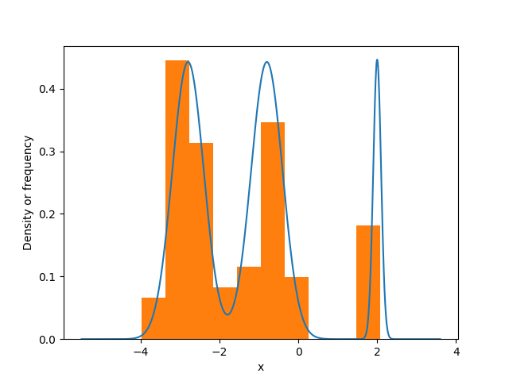
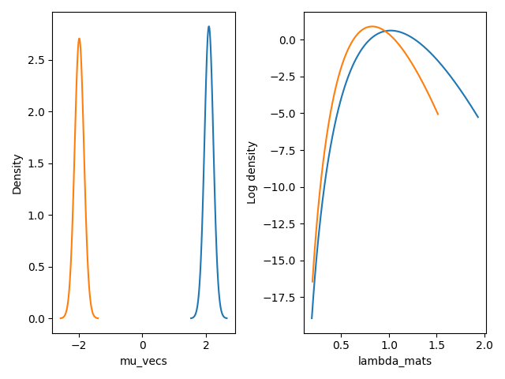

bayesml.gaussianmixture package#
モジュール内容#
このモジュールではガウス・ウィシャート事前分布とディリクレ事前分布を用いたガウス混合モデルを利用できます。

確率的データ生成モデル#
確率的データ生成モデルは以下の通りです：
\(K \in \mathbb{N}\): 潜在クラスの数
\(\boldsymbol{z} \in \{ 0, 1 \}^K\): 潜在クラス（潜在変数）を表すone-hotベクトル
\(\boldsymbol{\pi} \in [0, 1]^K\)：潜在クラスのパラメータ（\(\sum_{k=1}^K \pi_k=1\)）
\(D \in \mathbb{N}\): データの次元
\(\boldsymbol{x} \in \mathbb{R}^D\): データ点
\(\boldsymbol{\mu}_k \in \mathbb{R}^D\): パラメータ
\(\boldsymbol{\mu} = \{ \boldsymbol{\mu}_k \}_{k=1}^K\)
\(\boldsymbol{\Lambda}_k \in \mathbb{R}^{D\times D}\) : パラメータ（正定値行列）
\(\boldsymbol{\Lambda} = \{ \boldsymbol{\Lambda}_k \}_{k=1}^K\)
\(| \boldsymbol{\Lambda}_k | \in \mathbb{R}\): \(\boldsymbol{\Lambda}_k\) の行列式
事前分布#
事前分布は以下の通りです：
\(\boldsymbol{m}_0 \in \mathbb{R}^{D}\): ハイパーパラメータ
\(\kappa_0 \in \mathbb{R}_{>0}\): ハイパーパラメータ
\(\nu_0 \in \mathbb{R}\): ハイパーパラメータ（\(\nu_0 > D-1\)）
\(\boldsymbol{W}_0 \in \mathbb{R}^{D\times D}\): ハイパーパラメータ（正定値行列）
\(\boldsymbol{\alpha}_0 \in \mathbb{R}_{> 0}^K\): ハイパーパラメータ
\(\mathrm{Tr} \{ \cdot \}\): 行列のトレース
\(\Gamma (\cdot)\): ガンマ関数
ここで、\(B(\boldsymbol{W}_0, \nu_0)\) および \(C(\boldsymbol{\alpha}_0)\) は次のように定義されます：
事後分布#
変分ベイズ法の \(t\) 回目の反復における近似事後分布は、以下の通りです：
\(\boldsymbol{x}^n = (\boldsymbol{x}_1, \boldsymbol{x}_2, \dots , \boldsymbol{x}_n) \in \mathbb{R}^{D\times n}\): 与えられたデータ
\(\boldsymbol{z}^n = (\boldsymbol{z}_1, \boldsymbol{z}_2, \dots , \boldsymbol{z}_n) \in \{ 0, 1 \}^{K \times n}\): 与えられたデータの潜在クラス
\(\boldsymbol{r}_i^{(t)} = (r_{i,1}^{(t)}, r_{i,2}^{(t)}, \dots , r_{i,K}^{(t)}) \in [0, 1]^K\): \(i`番目の潜在クラスに対するパラメータです。 (:math:\)sum_{k=1}^K r_{i, k}^{(t)} = 1`)
\(\boldsymbol{m}_{n,k}^{(t)} \in \mathbb{R}^{D}\): ハイパーパラメータ
\(\kappa_{n,k}^{(t)} \in \mathbb{R}_{>0}\): ハイパーパラメータ
\(\nu_{n,k}^{(t)} \in \mathbb{R}\): ハイパーパラメータ \((\nu_n > D-1)\)
\(\boldsymbol{W}_{n,k}^{(t)} \in \mathbb{R}^{D\times D}\): ハイパーパラメータ（正定値行列）
\(\boldsymbol{\alpha}_n^{(t)} \in \mathbb{R}_{> 0}^K\): ハイパーパラメータ
ハイパーパラメータの更新ルールは以下の通りです。
予測分布#
近似予測分布は以下の通りです：
\(\boldsymbol{x}_{n+1}\in \mathbb{R}^d\): 新たなデータ点
\(\boldsymbol{\mu}_{\mathrm{p},k} \in \mathbb{R}^D\): 予測分布のパラメータ
\(\boldsymbol{\Lambda}_{\mathrm{p},k} \in \mathbb{R}^{D \times D}\): 予測分布のパラメータ（正定値行列）
\(\nu_{\mathrm{p},k} \in \mathbb{R}_{>0}\): 予測分布のパラメータ
ここで、パラメータは事後分布のハイパーパラメータから以下のように求められます:
GitHubスターのお願い#

クラス#
- class bayesml.gaussianmixture.GenModel(c_num_classes, c_degree, pi_vec=None, mu_vecs=None, lambda_mats=None, h_alpha_vec=None, h_m_vecs=None, h_kappas=None, h_nus=None, h_w_mats=None, seed=None)#
ベースクラス:
Generative確率的データ生成モデルと事前分布
- パラメータ:
- c_num_classesint
正の整数
- c_degreeint
正の整数
- pi_vecnumpy.ndarray, optional
\([0, 1]^K\) 内の実数ベクトル。デフォルトでは [1/K, 1/K, ..., 1/K] です。
- mu_vecsnumpy.ndarray, optional
実数のベクトルで、デフォルトではゼロベクトルです。
- lambda_matsnumpy.ndarray, optional
正定値対称行列（デフォルトでは単位行列）
- h_alpha_vecnumpy.ndarray, optional
正の実数のベクトル。デフォルトでは [1/2, 1/2, ..., 1/2] です。
- h_m_vecsnumpy.ndarray, optional
実数のベクトル（デフォルトではゼロベクトル）
- h_kappasfloat, optional
正の実数。デフォルトでは [1.0, 1.0, ..., 1.0] です。
- h_nusfloat, optional
c_degree-1 より大きい実数。デフォルトでは
c_degreeの値です- h_w_matsnumpy.ndarray, optional
正定値対称行列（デフォルトでは単位行列）
- seed{None, int}, optional
numpy.random.default_rng() を初期化するシード値です。デフォルトでは None
メソッド
事前分布からパラメータを生成します。
gen_sample(sample_size)確率的データ生成モデルからサンプルを生成します。
GenModel の定数を取得します。
事前分布のハイパーパラメータを取得します。
確率的データ生成モデルのパラメータを取得します。
load_h_params(filename)h_paramsにハイパーパラメータをロードします。
load_params(filename)save_paramsに保存されたパラメータをロードします。save_h_params(filename)python
pickleモジュールを使ってハイパーパラメータを保存します。save_params(filename)python の
pickleモジュールを使ってパラメータを保存します。save_sample(filename, sample_size)生成されたサンプルを NumPy
.npzフォーマットで保存します。set_h_params([h_alpha_vec, h_m_vecs, ...])事前分布のハイパーパラメータを設定します。
set_params([pi_vec, mu_vecs, lambda_mats])確率的データ生成モデルのパラメータを設定します。
visualize_model([sample_size])確率的データ生成モデルと生成されたサンプルを可視化します。
- get_constants()#
GenModel の定数を取得します。
- set_h_params(h_alpha_vec=None, h_m_vecs=None, h_kappas=None, h_nus=None, h_w_mats=None)#
事前分布のハイパーパラメータを設定します。
- パラメータ:
- h_alpha_vecnumpy.ndarray, optional
正の実数のベクトル。デフォルトは
Noneです- h_m_vecsnumpy.ndarray, optional
実数のベクトル。デフォルトはNoneです
- h_kappasfloat, optional
正の実数。デフォルトはNoneです
- h_nusfloat, optional
c_degree-1 より大きい実数。デフォルトは None です
- h_w_matsnumpy.ndarray, optional
正定値対称行列。デフォルトでは None
- get_h_params()#
事前分布のハイパーパラメータを取得します。
- 返り値:
- h_params{str:float, np.ndarray}
"h_alpha_vec":self.h_alpha_vecの値"h_m_vecs":self.h_m_vecsの値"h_kappas":self.h_kappasの値"h_nus":self.h_nusの値"h_w_mats":self.h_w_matsの値
- gen_params()#
事前分布からパラメータを生成します。
生成された値は、
self.pi_vec、self.mu_vecs、および``self.lambda_mats``に設定されます。
- set_params(pi_vec=None, mu_vecs=None, lambda_mats=None)#
確率的データ生成モデルのパラメータを設定します。
- パラメータ:
- pi_vecnumpy.ndarray, optional
\([0, 1]^K\) 内の実数ベクトルです。その要素の和は 1 でなければなりません。
- mu_vecsnumpy.ndarray, optional
実数のベクトル
- lambda_matsnumpy.ndarray, optional
正定値対称行列
- get_params()#
確率的データ生成モデルのパラメータを取得します。
- 返り値:
- params{str:float, numpy.ndarray}
"pi_vec":self.pi_vecの値"mu_vecs":self.mu_vecsの値"lambda_mats":self.lambda_matsの値
- gen_sample(sample_size)#
確率的データ生成モデルからサンプルを生成します。
- パラメータ:
- sample_sizeint
正の整数
- 返り値:
- xnumpy ndarray
形状が「(sammple_size,c_degree)」で、要素が実数である2次元配列です。
- znumpy ndarray
形状が「(sample_size,c_num_classes)」で、各行がone-hotベクトルからなる2次元配列です。
- save_sample(filename, sample_size)#
生成されたサンプルを NumPy
.npzフォーマットで保存します。キーワード「x」、「z」を指定して、NpzFileとして保存されます。
- パラメータ:
- filenamestr
サンプルを保存するファイル名。ない場合は
.npzが追加されます。- sample_sizeint
正の整数
- visualize_model(sample_size=100)#
確率的データ生成モデルと生成されたサンプルを可視化します。
- パラメータ:
- sample_sizeint, オプション
正の整数、デフォルトは100
例
>>> from bayesml import gaussianmixture >>> import numpy as np >>> model = gaussianmixture.GenModel( >>> c_num_classes=3, >>> c_degree=1, >>> pi_vec=np.array([0.444,0.444,0.112]), >>> mu_vecs=np.array([[-2.8],[-0.8],[2]]), >>> lambda_mats=np.array([[[6.25]],[[6.25]],[[100]]]) >>> ) >>> model.visualize_model() pi_vec: [0.444 0.444 0.112] mu_vecs: [[-2.8] [-0.8] [ 2. ]] lambda_mats: [[[ 6.25]] [[ 6.25]] [[100. ]]]
- class bayesml.gaussianmixture.LearnModel(c_num_classes, c_degree, h0_alpha_vec=None, h0_m_vecs=None, h0_kappas=None, h0_nus=None, h0_w_mats=None, seed=None)#
ベースクラス:
Posterior,PredictiveMixin事後分布と予測分布
- パラメータ:
- c_num_classesint
正の整数
- c_degreeint
正の整数
- h0_alpha_vecnumpy.ndarray, optional
正の実数のベクトル。デフォルトでは [1/2, 1/2, ..., 1/2] です。
- h0_m_vecsnumpy.ndarray, optional
実数のベクトル（デフォルトではゼロベクトル）
- h0_kappas{float, numpy.ndarray}, optional
正の実数。デフォルトでは [1.0, 1.0, ..., 1.0] です。
- h0_nus{float, numpy.ndarray}, optional
c_degree-1 より大きい実数。デフォルトでは
c_degreeの値です- h0_w_matsnumpy.ndarray, optional
正定値対称行列（デフォルトでは単位行列）
- seed{None, int}, optional
numpy.random.default_rng() を初期化するシード値です。デフォルトでは None
- 属性:
- h0_w_mats_invnumpy.ndarray
h0_w_mats の逆行列
- hn_alpha_vecnumpy.ndarray
正の実数のベクトル
- hn_m_vecsnumpy.ndarray
実数のベクトル
- hn_kappasnumpy.ndarray
正の実数
- hn_nusnumpy.ndarray
c_degree-1 より大きい実数
- hn_w_matsnumpy.ndarray
正定値対称行列
- hn_w_mats_invnumpy.ndarray
hn_w_mats の逆行列
- r_vecsnumpy.ndarray
実数のベクトルです。その要素の和は1です。
- nsnumpy.ndarray
正の実数
- s_matsnumpy.ndarray
正定値対称行列
- vlfloat
実数
- p_pi_vecsnumpy.ndarray
\([0, 1]^K\) 内の実数ベクトルです。その要素の和は 1 でなければなりません。
- p_mu_vecsnumpy.ndarray
実数のベクトル
- p_nusnumpy.ndarray
正の実数
- p_lambda_matsnumpy.ndarray
正定値対称行列
メソッド
予測分布のパラメータを計算します。
estimate_latent_vars(x[, loss])指定された基準の下で、x に対応する潜在変数を推定します。
estimate_latent_vars_and_update(x[, loss, ...])潜在変数を推定し、事後分布を逐次的に更新します。
estimate_params([loss])与えられた基準の下で、確率的データ生成モデルのパラメータを推定します。
LearnModel の定数を取得します。
事後分布のハイパーパラメータの初期値を取得します。
事後分布のハイパーパラメータを取得します。
予測分布のパラメータを取得します。
load_h0_params(filename)h0_paramsにハイパーパラメータをロードします。
load_hn_params(filename)hn_paramsにハイパーパラメータをロードします。
make_prediction([loss])与えられた基準の下で、新しいデータ点を予測します。
overwrite_h0_params()事後分布のハイパーパラメータの初期値を学習した値で上書きします。
pred_and_update(x[, loss, max_itr, ...])逐次的に新しいデータ点を予測し、事後分布を更新します。
reset_hn_params()事後分布のハイパーパラメータを初期値に戻します。
save_h0_params(filename)python
pickleモジュールを使ってハイパーパラメータを保存します。save_hn_params(filename)python
pickleモジュールを使ってハイパーパラメータを保存します。set_h0_params([h0_alpha_vec, h0_m_vecs, ...])事前分布のハイパーパラメータを設定します。
set_hn_params([hn_alpha_vec, hn_m_vecs, ...])事後分布のハイパーパラメータの更新値を設定します。
update_posterior(x[, max_itr, num_init, ...])訓練データを使って事後分布のハイパーパラメータを更新します。
パラメータの事後分布を可視化します。
- get_constants()#
LearnModel の定数を取得します。
- set_h0_params(h0_alpha_vec=None, h0_m_vecs=None, h0_kappas=None, h0_nus=None, h0_w_mats=None)#
事前分布のハイパーパラメータを設定します。
- パラメータ:
- h0_alpha_vecnumpy.ndarray, optional
正の実数のベクトル。デフォルトは
Noneです- h0_m_vecsnumpy.ndarray, optional
実数のベクトル。デフォルトはNoneです
- h0_kappas{float, numpy.ndarray}, optional
正の実数。デフォルトはNoneです
- h0_nus{float, numpy.ndarray}, optional
c_degree-1 より大きい実数。デフォルトは None です
- h0_w_matsnumpy.ndarray, optional
正定値対称行列。デフォルトでは None
- get_h0_params()#
事後分布のハイパーパラメータの初期値を取得します。
- 返り値:
- h0_paramsdict of {str: numpy.ndarray}
"h0_alpha_vec": The value ofself.h0_alpha_vec"h0_m_vecs":self.h0_m_vecsの値"h0_kappas":self.h0_kappasの値"h0_nus":self.h0_nusの値"h0_w_mats":self.h0_w_matsの値
- set_hn_params(hn_alpha_vec=None, hn_m_vecs=None, hn_kappas=None, hn_nus=None, hn_w_mats=None)#
事後分布のハイパーパラメータの更新値を設定します。
- パラメータ:
- hn_alpha_vecnumpy.ndarray, optional
正の実数のベクトル。デフォルトは
Noneです- hn_m_vecsnumpy.ndarray, optional
実数のベクトル。デフォルトはNoneです
- hn_kappas{float, numpy.ndarray}, optional
正の実数。デフォルトはNoneです
- hn_nus{float, numpy.ndarray}, optional
c_degree-1 より大きい実数。デフォルトは None です
- hn_w_matsnumpy.ndarray, optional
正定値対称行列。デフォルトでは None
- get_hn_params()#
事後分布のハイパーパラメータを取得します。
- 返り値:
- hn_paramsdict of {str: numpy.ndarray}
"hn_alpha_vec": The value ofself.hn_alpha_vec"hn_m_vecs":self.hn_m_vecsの値"hn_kappas":self.hn_kappasの値"hn_nus":self.hn_nusの値"hn_w_mats":self.hn_w_matsの値
- update_posterior(x, max_itr=100, num_init=10, tolerance=1.0E-8, init_type='subsampling')#
訓練データを使って事後分布のハイパーパラメータを更新します。
- パラメータ:
- xnumpy.ndarray
(sample_size, c_degree) 次元の ndarray です。すべての要素は実数でなければなりません。
- max_itrint, オプション
反復回数の最大値（デフォルトは100）
- num_initint, オプション
初期化の回数（デフォルトは10）
- tolerancefloat, optional
変分下限の収束基準。デフォルトは 1.0E-8 です
- init_typestr, optional
'サブサンプリング'：各潜在クラスについて、サイズがint(np.sqrt(x.shape[0]))となる部分サンプルを抽出します。そして、その平均と共分散行列をhn_m_vecsおよびhn_lambda_matsの初期値として使用します。'random_responsibility':r_vecsに負担率をランダムに割り当てます
初期化の種類。デフォルトは
'subsampling'です
- estimate_params(loss='squared')#
与えられた基準の下で、確率的データ生成モデルのパラメータを推定します。
この基準は、
pi_vec、mu_vecs、および``lambda_mats``の推定にそれぞれ個別に適用される点にご注意ください。したがって、loss="KL"の場合、ディリクレ分布、スチューデントのt分布、およびウィシャートの分布のタプルが返されます。- パラメータ:
- lossstr, optional
ベイズリスク関数の基礎となる損失関数は、デフォルトで「二乗誤差損失」となります。この関数は「二乗誤差損失」、「0-1損失」、「KL」をサポートしております。
- 返り値:
- Estimatestuple of {numpy ndarray, float, None, or rv_frozen}
pi_vec_hat：pi_vec の推定値mu_vecs_hat：mu_vecs の推定値lambda_mats_hat：lambda_mats の推定値
指定された損失関数に基づく推定値です。存在しない場合は、`np.nan`が返されます。損失関数が「KL」の場合、事後分布そのものがscipy.statsのrv_frozenオブジェクトとして返されます。
- visualize_posterior()#
パラメータの事後分布を可視化します。
例
>>> from bayesml import gaussianmixture >>> gen_model = gaussianmixture.GenModel( >>> c_num_classes=2, >>> c_degree=1, >>> mu_vecs=np.array([[-2],[2]]), >>> ) >>> x,z = gen_model.gen_sample(100) >>> learn_model = gaussianmixture.LearnModel(c_num_classes=2, c_degree=1) >>> learn_model.update_posterior(x) >>> learn_model.visualize_posterior() hn_m_vecs: [[ 2.09365933] [-1.97862429]] hn_kappas: [47.68878373 54.31121627] hn_nus: [47.68878373 54.31121627] hn_w_mats: [[[0.02226992]] [[0.01575793]]] E[lambda_mats]= [[[1.06202546]] [[0.85583258]]]

- get_p_params()#
予測分布のパラメータを取得します。
- 返り値:
- p_paramsdict of {str: numpy.ndarray}
"p_mu_vecs":self.p_mu_vecsの値"p_nus":self.p_nusの値"p_lambda_mats":self.p_lambda_matsの値
- calc_pred_dist()#
予測分布のパラメータを計算します。
- make_prediction(loss='squared')#
与えられた基準の下で、新しいデータ点を予測します。
- パラメータ:
- lossstr, optional
ベイズリスク関数の基礎となる損失関数で、デフォルトでは「squared」です。この関数は「squared」と「0-1」をサポートしています。
- 返り値:
- predicted_value{float, numpy.ndarray}
与えられた損失関数に基づく予測値です。
- pred_and_update(x, loss='squared', max_itr=100, num_init=10, tolerance=1.0E-8, init_type='random_responsibility')#
逐次的に新しいデータ点を予測し、事後分布を更新します。
h0_params は、x によって hn_params を更新する前に、現在の hn_params で上書きされます
- パラメータ:
- xnumpy.ndarray
それはc次元のベクトルでなければなりません
- lossstr, optional
ベイズリスク関数の基礎となる損失関数で、デフォルトでは「squared」です。この関数は「squared」と「0-1」をサポートしています。
- max_itrint, オプション
反復回数の最大値（デフォルトは100）
- num_initint, オプション
初期化の回数（デフォルトは10）
- tolerancefloat, optional
変分下限の収束基準。デフォルトは 1.0E-8 です
- init_typestr, optional
'random_responsibility':r_vecsに負担率をランダムに割り当てます'サブサンプリング'：各潜在クラスについて、サイズがint(np.sqrt(x.shape[0]))となる部分サンプルを抽出します。そして、その平均と共分散行列をhn_m_vecsおよびhn_lambda_matsの初期値として使用します。
初期化の種類。デフォルトは
'random_responsibility'です
- 返り値:
- predicted_value{float, numpy.ndarray}
与えられた損失関数に基づく予測値です。
- estimate_latent_vars(x, loss='0-1')#
指定された基準の下で、x に対応する潜在変数を推定します。
なお、この基準は各データ点に対して個別に適用される点にご注意ください。
- パラメータ:
- xnumpy.ndarray
(sample_size, c_degree) 次元の ndarray です。すべての要素は実数でなければなりません。
- lossstr, optional
ベイズリスク関数の基礎となる損失関数で、デフォルトは「0-1」です。この関数では、「squared」、「0-1」、および「KL」がサポートされています。
- 返り値:
- estimatesnumpy.ndarray
指定された損失関数に基づく推定値です。損失関数が「KL」の場合、事後分布は、各要素が出現確率で構成されるnumpy.ndarrayとして返されます。
- estimate_latent_vars_and_update(x, loss='0-1', max_itr=100, num_init=10, tolerance=1.0E-8, init_type='subsampling')#
潜在変数を推定し、事後分布を逐次的に更新します。
h0_params は、x によって hn_params を更新する前に、現在の hn_params で上書きされます
- パラメータ:
- xnumpy.ndarray
それはc次元のベクトルでなければなりません
- lossstr, optional
ベイズリスク関数の基礎となる損失関数で、デフォルトは「0-1」です。この関数では、「squared」および「0-1」がサポートされています。
- max_itrint, オプション
反復回数の最大値（デフォルトは100）
- num_initint, オプション
初期化の回数（デフォルトは10）
- tolerancefloat, optional
変分下限の収束基準。デフォルトは 1.0E-8 です
- init_typestr, optional
'サブサンプリング'：各潜在クラスについて、サイズがint(np.sqrt(x.shape[0]))となる部分サンプルを抽出します。そして、その平均と共分散行列をhn_m_vecsおよびhn_lambda_matsの初期値として使用します。'random_responsibility':r_vecsに負担率をランダムに割り当てます
初期化の種類。デフォルトは
'subsampling'です
- 返り値:
- estimatesnumpy.ndarray
指定された損失関数に基づく推定値です。損失関数が「KL」の場合、事後分布は、各要素が出現確率で構成されるnumpy.ndarrayとして返されます。